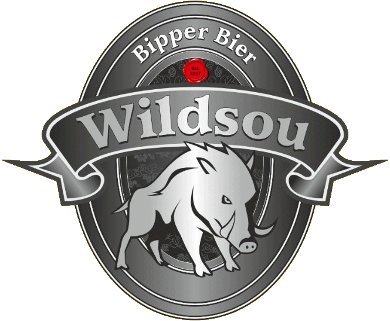

Die Biere
Brauerei
Shop
Kontakt
REGIONAL & BIO / 2026
Bio-Lagerbier
DÜRRMÜHLI
BIO-LAGER.
Gemacht für heisse Tage, ist Dürrmühli ein süffiges und erfrischendes Bier.
Am Dorfbach errichtete man eine vom Wasser des Laufes getriebene Mühle. Doch litt deren Leistung bei Trockenheit oft unter mangelnder Wasserführung des Baches...
Jetzt Bestellen
01 / Stammwürze
1.048 OG
02 / Bittere
18 IBU
03 / Zertifizierung
Bio Knospe
04 / Filtration
Trüb (Natural)